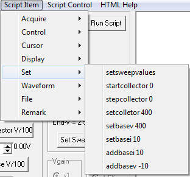

startcollector n Sets the starting voltage value for a slow sweep of the Collector. Due to the use of integer values, Vcollector =
n/100. This is the same as setting the
Start spin edit value. The value is not set until a
setsweepvalues command is executed.
stepcollector n Sets the stepping voltage value for a slow sweep of the Collector. Due to the use of integer values, Vstep =
n/100. This is the same as setting the
Step spin edit value. The value is not set until a
setsweepvalues command is executed.
setsweepvalues Sends the sweep
settings in Start and Step to Mini_CT. The values are stored and used
when a Slow Sweep is initiated. This is the same as clicking the
Set Sweep Values button.
setcollector n Sets the Collector voltage. Due to the use of integer values, Vbase =
n/100. This is the same as setting the
spin edit value then clicking the
Set Collector V/100 button. Note: Setting the collector to this static value turns off the AC sweep waveform.
setbasev n Sets the Base voltage. Due to the use of integer values, Vbase =
n/100. This is the same as setting the
spin edit value then clicking the
Set Base V/100 button.
setbasei n Sets the Base current. Due to the use of integer values, Ibase uA=
n/10. This is the same as setting the
spin edit value then clicking the
Set Base I/10 button.
addbasei n Works similar to the
setbasei command except the signed integer value
n is added to the spin edit value.
addbasev n Works similar to the
setbasev command except the signed integer value
n is added to the spin edit value.
Script Item
Main